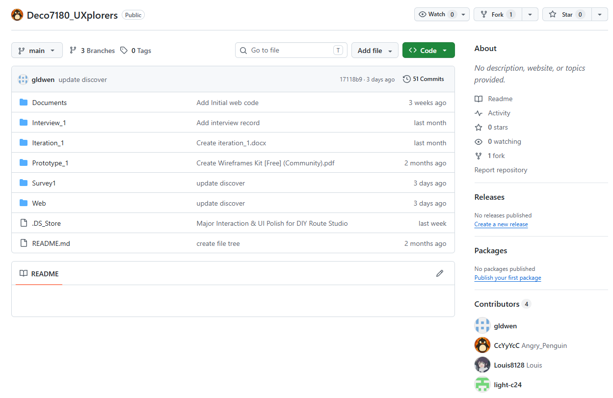

Problem
DECO7180 Project Poster
FoodieRoute
Explore restaurants with confidence.
FoodieRoute is a tourist-oriented dining platform that combines food safety visibility, route-based exploration, and clearer restaurant signals to support faster decisions in unfamiliar places.
Confidence Lens
Trust, safety, and route fit in one journey
Data Sources
Safety ratings, reviews, restaurant locations, route data
Users
Designed for tourists, international visitors, and students.
Contribution
FoodieRoute makes confidence a first-class design goal.
Project Summary
Why not just use Google Maps?
Generic map tools are strong at navigation, but weaker at expressing restaurant trust. FoodieRoute focuses on the dining decision itself by foregrounding safety, simplifying choices, and aligning suggestions with travel routes.
Google Maps
Navigation-first Popularity, ratings, single destination searchFoodieRoute
Decision-first Trust signals, route discovery, tourist-friendly guidanceResearch Direction
What the design tries to achieve
- Surface official safety information early
- Reduce decision pressure with guided route exploration
- Replace abstract ranking with readable restaurant categories
- Support dining discovery during travel, not after it
Collaborative Workflow
Shared development documented in the team GitHub repository

Repository snapshot
51 commits, 3 branches, 4 contributors
Project materials
Documents, interviews, iterations, prototypes, surveys, web build
Takeaway
Research, prototyping, and implementation evolved together in one shared workflow
01
Low-Fidelity
Explored structure and early route concepts.
02
Mid-Fidelity
Tested clearer categories and guided planning.
03
High-Fidelity
Refined filters, trust cues, and map interaction.
Key Findings & Design Outcome
FoodieRoute turns restaurant discovery into a calmer, more trustworthy experience
The final concept is less about finding any place to eat, and more about helping visitors feel sure about where they choose.
Visible Safety
Official food safety information becomes easy to notice, not hidden.
Guided Routes
Restaurants are explored along a route instead of one search result at a time.
Clear Categories
Readable categories help users understand options faster than abstract weights.
Faster Decisions
Tourists spend less time comparing scattered signals and more time acting.
User Insights
What participants valued most
- Safety information increased trust immediately.
- Guided recommendations felt easier than manual controls.
- Route-based discovery matched real travel behaviour.
- Clearer information led to stronger decision confidence.
Core Features
What the final platform combines
- Interactive restaurant map
- Food safety indicators
- Route-based recommendations
- Category and review integration
Positioning
FoodieRoute vs. generic restaurant search
Conventional map search
- Navigation-first
- Popularity-focused
- Single destination mindset
- Limited safety visibility
FoodieRoute
- Decision-first
- Confidence-focused
- Route-based restaurant discovery
- Integrated safety trust cues
Final Goal
Help tourists explore restaurants with confidence, not just convenience.
FoodieRoute combines trusted information, guided exploration, and route-aware discovery into one clearer dining experience for unfamiliar cities.
Future Direction
- Public transport and cycling routes
- Nearby attraction recommendations
- Multilingual support
- Accessibility improvements